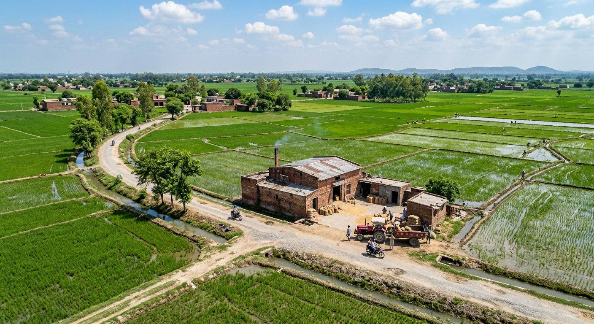

Integrity
Building relationships through honesty, transparency, and responsibility.
Leadership · Saith Hanif Rice Mills
Saith Hanif
Founder · Established 1975
At Saith Hanif Rice Mills, our journey is shaped by experience, responsibility, and a lasting commitment to the values behind our business.

A legacy built through experience
Saith Hanif established Saith Hanif Rice Mills in 1975 in Jhabran, Sheikhupura, Punjab, Pakistan. The mill still stands on Jandiala Road. The work is still milling, sorting and packing rice.
This page does not invent a personal biography, education, awards or years in a particular office. What is documented here is the mill: a name, a place, a founding year, and three product brands — Ziyarat, Sultan and Wazir.
Leadership, for us, means keeping that record honest: the grain, the pack, the specification, and the conversation with the buyer.
How the mill works
Building relationships through honesty, transparency, and responsibility.
A thoughtful approach to processing, sorting and presentation — agreed in writing for the order.
Respecting the mill founded in 1975, and the work that still happens in Jhabran.
Valuing long-term relationships with customers and trade partners.
Continuing to improve while remaining grounded in established values.
Established in 1975
From Jhabran, Sheikhupura, Saith Hanif Rice Mills continues its work in Pakistani rice, under Ziyarat, Sultan and Wazir. Twelve listed products. Confirm the pack and the specification with the mill.

Eight packs, from 1121 steam and sella to Classic, basmati, short grain, Awami and B-1.
Explore Ziyarat
Two packs: Kainat Basmati Sella and Short Grain.
Explore Sultan
Two packs: Kainat Basmati Sella and Steam 1121. Confirm current pack artwork with the mill.
Explore WazirContinuity
Our commitment is to honour the mill founded in 1975, keep the product conversation clear, and build relationships that have a reason to last.